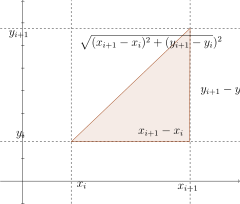
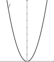
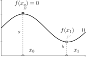

Mathematical Appendix
Hola necesitamos saber si está actualizando o no como es posible que tengamos
The following lecture aim give to lector a idea about some mathematical concetps used in data science. This lecture not pretend subsitute the guide books, always is preferable read the proposed book.
Functions
In this section we are going to discuss some useful functions:
lineal function
quadratic function
hipérbola rectangular
expontential
logaríthmic
Functions
A function is an assignation rule (\(f\)), that relate elements from a set \(A\) with elemnets of the \(B\) set, such that, to each element \(A\) is linked or associtad with only single one element in \(B\).
we can write the relation in the following way:
A function is a rule that assign to each element of \(A\) a single one element of \(B\), however the element of \(B\) could be image of several elements of \(A\):
this implies that
For instance, the function \(x^{2}\) generate the following order pairs \((x,y)\) y \((-x,y)\) given that \(x\neq-x\) the is a function.
The function
\[\sqrt{x}\]no it is a function given that for each \(x\), \(y\) can take two values \((-y)\) y \(y\). This not allow establish a unique relation, Note that the first component of the order pair \((x,y)\) cant not appear in two pairs “a menos” that the second component be equal in each one.Given the sets \(A\), \(B\) a function is defined how all each pairs \((a,b)\) where \(a \in A\) and \(b \in B\), where \((a,b)\) and \((a,c)\) if and only id \(b=c\).
We can define the following rules of assignation:
or the naive definition of probability, or equiprobable events.
then, \(f(x)=1/n\) where \(n\) is the number of equallyprobable events.
give an example of the following function.
A question \(x^{2}+y^{2}=r^{2}\) is a function?.
lineal function
We are going to discuss the concept of slope, in some texts scope is denoted by \(m\) and is defined as: $$ m = \frac{f(x_{2})-f(x_{1})}{x_{2}-x_{1}}$$
In other words the scope, asssuming \(y = f(x)\), is the chanfge in the position in \(\Delta f(x) = \Delta y\) with respect to a \(\Delta x\), to understand the concept of scope, we uses the fundamental equation of motion rectilineo uniformly acelerated,
using the equation of velocity \(v=\frac{d}{t}\) where \(v\) is velocity, \(d\) distance recorrida and \(t\) the elapsed time,
this indicate us when an object move \(y\) unities of distance eacth unity \(t\) of time. The linear function is important, given that the slope \((m)\) is constant, in all domain this means that the changes in (y) are constant o that the variable \((y)\) change in the same quanity when \(t\) increases in one unity.
a liner function is written as:
The slope \(\theta\) indicates how many unities changes \(y\) when \(x\) increases in one unity.
two parralle lines implies that never are intercepted, note that \(c>b\), and \(c>0\) puesto que esta pasa por el origen.
consideremos el caso de como la función general de manera lineal dado un punto y la pendiente; es decir sabemos que es proporcionalidad esto quiere decir que si por el punto \(a\) deben recaer puntos tales que sean proporcionales en sus cambios;
Problema; Cada tres años el valor de las casas disminuye exactamente \(\beta\) monetary unities, si el valor promedio de las casas es de \(\alpha\) $, ¿como es la formula funcional que nos permite establecer una relación para este fenómeno económico?
otro problema es dada la información de la pendiente y un punto de la función hallar su forma funcional; es decir problema; u agricultor utiliza un fertilizante el número de sacos de café que produce es de \(5 \) por cada 1 lt de solución acuosa del fertilizante se ha tomado un dato \((3,19)\) hallar la producción del agricultor cuando utiliza 8 litros de la solución. add the table with rate to establish wich is the slope!
AGREGAR TABLA DE PENDIENTE!
El lector recordará por sus clases de geometría el muy útil y prestigioso \textbf{teorema de pitágoras} que enuncia que de un triangulo rectángulo ( que posee un angulo de 90 grados) la hipotenusa al cuadrado es igual a la suma de los catetos al cuadrado. es decir \(h^{2}= o^{2}+a^{2}\)
pues en un sistema de coordenadas rectangulares, este teorema sirve para enunciar la distancia entre dos puntos, de la siguiente manera; \(d(a,b)=\sqrt{((x_{i+1}-x_{i})^{2} + ((y_{i+1}-y_{i})^{2}}\)

Es esencial que se conozca este concepto de distancia (note que no es el único), puesto que muchas de las fórmulas “institucionalizadas” en el desarrollo matemático dependen de ella, como por ejemplo el de la circunferencia. y esta nos será útil para trabajar un concepto económico conocido como la frontera de posibilidades de producción.
veremos que
para simplificar supongamos que nuestra circunferencia esta centrada en el punto de origen por lo que \(h+k=0\). Es por lo tanto necesario que el lector observe que es la misma ecuación de la distancia entre dos puntos, mencionada anteriormente;\((x)^{2}+(y)^{2}=r^{2}\) ahora como en el análisis económico nos interesa solo cantidades positivas tenemos que; restringirlo así que hallando
pero necesitamos que \(r^{2}-x^{2}\geq 0\) así tomaremos los \(r\geq x \) no negativos.
AGREGAR CIRCUNFERENCIA IMAGEN
la parábola;
$$ y= x^{2} + varphi $$
el punto más alto se conoce como vértice y es fácil hallar \(f(0)\) que da como resultado el par ordenado \((0,\varphi)\). Hemos incluido esta función para que se tenga en cuenta de su ilustración, la simetría con respecto al eje y.
esto es importante debido a que \(f(-x)=f(x)\) lo cual será muy útil para desarrollos posteriores en la matemática.

textbf{Operaciones con funciones}
Se pueden operar funciones, como su composición, suma, resta, multiplicación y división entre otras.
función inversa
La función inversa es importante en el análisis económico por eso la hemos incluido, para que una una función \(f\) tenga inversa \(f^{-1}\) se debe cumplir la condición \(f\) de que la función es biunívoca. Es decir que si \(f(x_{1})=f(x_{2})\) entonces, $ x_{1} = x_{2}$.
Es decir para la parábola en todo su dominio no podemos definir una función inversa debido a que como ya se dijo es simétrica y entonces \(f(-x)=f(x)\) y \(-x\neq x\).
la función inversa actúa de manera especial en economía puesto que muchos de los modelos matemáticos hacen uso de su concepto, sabrá por su curso de introducción a la economía que la demanda \(Q=f(p)\) con la función inversa nos aseguramos que \(p=f^{-1}(Q)\), observe que antes por la regla de asignación de \(f\) obteníamos de un conjunto de precios, las cantidades demandadas ahora \(f^{-1}\) nos permite obtener del conjunto de demandas el precio respectivo.
La función cuadrática es, muy útil en economía, la curva de lactancia ha sido muy estudiada para saber conocer la producción lechera; es decir el conocimiento predicción de la leche por medio de un modelo que puda ayudarnos a predecir esto de la forma;
Exponential and logarithm function
La importancia de la función exponencial, radica en una variedad de problemas prácticos que se pueden resolver por ejemplo, cada día un población de bacterias crece en el doble que el día anterior pasado (n) días cuantas bacterias hay, igualmente para el caso del capital, y otros ejemplos, aquí la utilidad radica en el potencial de quien es capaz de modelar diferentes situaciones con esta, primero trataremos de analizar un ejemplo que se expone en “que es y que no es la estadística”
pero antes una situación planteada con anterioridad que no es exactamente este enunciado pero sigue la misma estructura; los peces de un estanque se reproducen a diario cada día hay el doble de peces que el día anterior si a los 48 días el estanque esta al 100% cuantos días son necesarios para que el estanque esté a la mitad?
se sigue el siguiente razonamiento, si cada día hay el doble del día anterior entonces la población de ayer estrictamente fue la mitad de la de hoy. esto quiere decir que si hoy esta el estanque lleno ayer estuvo a la mitad es decir 47 días fueron necesarios para que esté a la mitad. Pero a (t) días que tan lleno estará el estanque? esto implica inmediatamente tratar de construir una ecuación que nos describa tal comportamiento esto es;
\(Q(t)\)la cantidad de bacterias en el día(t) es?
Now calculus,.
Por lo que de manera general conocer el problema queda resuelto a unos parámetros establecido según estemos interesados. Por lo tanto este mismo problema se podrá modelar siguiendo una estructura más general.
Logarithms
La introducción de los logaritmos se hace indispensable en un texto para economistas además, esta ingeniosa estructura matemática tuvo un valor histórico muy significativo como se relata en el texto de ian stewart. El uso de los logaritmos en economía es importante, tanto para el análisis empírico como teórico.
Los logaritmos fueron introducidos como un método para reducir la complejidad de algunos cálculos, por ejemplo efectuar calculos con sumas en lugar de productos, restas en lugar de divisiones, productos en lugar de potencias, y divisiones en lugar de raíces.
La base de los logaritmos neperianos, es el número \(e\), del cual hablaremos más adelante por ahora diremos que para una base cualquiera \(a\) el logaritmo de un número positivo en esa base se es
por lo tanto un logaritmo es un exponente, y como consecuencia directa sus propiedades están en intima relación con las reglas de la potenciación que el lector ha adquirido en sus cursos de matemáticas más elemental.
así \(H=a^{x}\) y \(L=a^{y}\) entonces;
Algunas de las propiedades de los logaritmos son:
Sin embargo, los logaritmos en el análisis económico tienen un base preferida como dijimos anteriormente el número \(e\).
De acuerdo a la relación \(log_{a}(Y) = x\) entonces, \(a>1\) y \(Y>1\) y \(x \in \mathbb{R}\).
otras de las propiedades importantes de los logaritmos son: \(\log_{a}a = 1\), \(\log_{a}1 =0\).
Como se verá el concepto de derivada es fundamental debido a que las relaciones entre magnitudes no son siempre constantes, ¿podría explicar el lector con un ejemplo a que se debe de que la pendiente como la hemos definido es insuficiente para tales relaciones?
Optimización
En esta sección solo daremos una breve introducción intuitiva debido a que la teoría de la optimización es de suma importancia se recomienda leer directamente este tema en cualquiera de las referencias.
En la figura que sigue se representa la función \(F(x)\) para un intervalo de su dominio como se puede evidenciar, existen dos puntos en los cuales \(\frac{dF(x)}{dx}=f(x)\) toma valor cero. Esto se evidencia en los puntos \(x_{0} \) y $ x_{1}$.
Esto quiere decir que encontrar un punto de la función para la cual su derivada en ese punto es igual a cero no es una condición suficiente para establecer el máximo global de tal función. Sin embargo, usualmente en economía este problema queda descartado por el tipo de función con la cual se trabaja donde podemos estar seguros que ese punto donde la derivada es nula es el máximo.

Lagrange multiplier
Para los óptimos restringidos para los cuales el problema puede tornarse mucho mas complicado puesto que existe una limitación en los valores que \(X\) puede tomar, esto debe ser incorporado en el criterio del máximo.
El multiplicador de Lagrange es un método que nos ayudará a resolver este problema, para comprender intuitivamente como trabaja supongamos que debemos invertir en dos compañías y que las tasas de retorno de ambas son \(r_{1}\) y$ r_{2}$ lo interesante del hecho es que desde esta perspectiva ya hemos resuelto la mitad del problema puesto que ya conocemos cual es la retribución por cada peso invertido, ahora debemos saber que tanto debemos invertir en cada una de ellas, se debe escoger la cantidad de dinero que nos retorne por las dos es la misma cantidad por que si no fuera así no se estaría maximizando los recursos pues una me ofrecerá mayor retorno sobre las otras, en otras “palabras”;
siendo \(\pi_{1}\) , \(\pi_{2}\) la ganancia de invertir en la primera y segunda empresa, y \(k_{1}\) y \(k_{2}\) es la cantidad de dinero invertida en las empresas respectivamente y \(k_{1}+ k_{2} =K \) el total disponible de capital. Entonces la condición para optimizar mis beneficios es
Así decimos que la ganancia por peso invertido debe ser igual para las dos compañías.
De manera general tenemos una función objetivo \(Z=f(x_1,x_2,x_3,...,x_n)\) que queremos maximizar, es decir tener las cantidades de los \(x_{i}\) que me permitan obtener el valor más grande de \(Z\) sujeto a una restricción presupuestaria de la forma \(K=\sum_{1}^{n}p_{i}x_{i}\).
obteniendo las condiciones necesarias;
esto es para todos los \(({i})\)
Como se puede observar este sistema requiere inmediatamente que;
supongamos que se tiene la siguiente función \(Z=x_{1}^{\alpha}x_{2}^{\beta}\) restringida al caso de \(I=p_{1}x_{1}+p_{2}x_{2}\) así con la conclusión establecida, no habrá necesidad de plantear otra ves el problema puesto que el lector ha visto que acabamos de desarrollar un modelo general.
entonces;
tenemos que
ahora si obtenemos las cantidades de \(x_{1}\) y \(x_{2}\) que maximizan las cantidades.
primero debemos despejar ya sea \(x_{1}\) o \(x_{2}\) y después llevarlo a la restricción presupuestaria esto es;
llevando a la restricción presupuestaria;
ahora este resultado lo llevamos a \(x_{1}\) a [*]
así obtenemos;
para comprobar que nuestra relación es cierta ahora necesitamos saber que realmente \(p_{1}x_{1}+p_{2}x_{2}=I\).
\[= \frac{I}{ p_{2} \left( \frac{\alpha + \beta}{\beta} \right)} + \frac{\alpha I}{\alpha + \beta}\]
esta función que acabamos de maximizar es muy utilizada en el análisis microeconómico y es nuestra puerta de entrada a este modulo, antes hablaremos de la importancia de la función. Esta función tiene dos interpretaciones; se puede interpretar desde el punto de vista del consumidor o de la firma. En el primer caso la función que tratamos de maximizar representa la utilidad de un individuo de consumir \(x_{1}\) y \(x_{2}\) y en el segundo tratamos de maximizar los beneficios económicos en el proceso productivo.
- Entonces si observamos el gasto que realiza el consumidor en el bien \(x_{1}\) que maximiza su utilidad es
- \[p_{1} x_{1} = \frac{\alpha I}{(\alpha + \beta)}\]
suponiendo que \((\alpha + \beta)=1\) observamos que se gasta una parte constante de la renta \((\alpha I)\) y es por esta razón que hacemos este supuesto pues los gastos del consumidor en el bien \(x_{1}\) es una parte constante de la renta y debe disponer del \(100\%\) de esta. Igualmente para el caso del bien dos
Un análisis análogo de la participación de los factores productivos en el producto se da para el caso de la firma el lector debe ser capa de dar una explicación intuitiva.
Applications in Microeconomics
En esta sección se exponen brevemente algunos temas relevantes del análisis microeconómico, algunos conceptos básicos que se deberían manejar con presteza y afianzamiento.
Dado en que en la sección(…) se dio una pequeña introducción a la optimización no restringida y para el multiplicador de lagrange, el tratamiento de los conceptos básicos en microeconomia requieren un buen manejo de esta sección, pues constituye un requisito. }
En el análisis microeconomico se supone que los agentes se comportan como optimizadores de sus recursos así el beneficio \(\pi\) que reciben las empresas aunque no es una condición necesaria que sea el fin único, para este caso.
Los beneficios son iguales a los ingresos menos los costos.
así que;
Observe que los ingresos \(I(Z)\) son iguales a \(p(Z)Z\) esto es el precio por el producto, observe que a la ves este precio esta en función de la cantidad de bienes ofrecidos en la economía, cuyo comportamiento se espera este determinado por los patrones de la \textit{ley de oferta y demanda}.
\(\frac{dI(Z)}{dZ}\) se conoce como el \textbf{Ingreso Marginal $(IM)$} Y \(\frac{dW(Z)}{dZ}\) se conoce como el \textbf{Costo Marginal $(CM)$} así que;
Ahora para simplificar nuestro análisis(solo por el momento) tendremos en cuenta que los agentes no tienen ninguna influencia sobre los precios del mercado, lo cual significa que \(\frac{dp(Z)}{dz}=0\) por lo tanto \(IM=p(Z)\) así que en el punto donde se maximizan los recursos;
para el caso concreto de la competencia perfecta (no se puede influir sobre los precios de mercado) el punto o la cantidad de producto \((Z)\) donde se maximizan los beneficios es cuando el \(CM\) iguala al precio de mercado, esto significa que la producción del ultimo producto le cuesta a la firma producirlo exactamente lo que recibe por ella en el mercado.
Mas adelante analizaremos que pasa cuando el \(IM\) no es igual a precio de mercado para esto veremos el concepto de elasticidad de demanda.
La elasticidad de demanda es el cambio en las cantidades de producto adquiridas con respecto a los cambios en los precios, esto en términos porcentuales es decir;
Se asume que \(\eta\) es negativa como se enunció anteriormente. Un incremento de los precios en $ 1\%$ disminuye la demanda en \(\eta \%.\)
Aceptaremos que la función tiene inversa, por el teorema de la función inversa.
Ahora reescribiremos el ingreso marginal, para utilizar el concepto de demanda que será de elasticidad en términos prácticos suponga que los precios incrementan, por lo tanto se esperaría tener mayor ingreso por cada unidad vendida. Sin embargo, no es del todo cierta esta afirmación depende del grado de sustitubilidad de nuestro producto entre otros factores que nos determinaran el grado de elasticidad de este, es decir;
Utilizando el concepto de elasticidad diremos que;
cuando \(\eta\) tiende a infinito significa que nuestro ingreso marginal debe ser igual al precio de mercado, en el caso contrario cuando la elasticidad tiene de cero tendremos un ingreso marginal inferior al precio de mercado.
para ilustrar la importancia en la relación supongamos que \(\eta=1\) esto implica que un aumento de los precios en $ 1 \% $ reducirá las cantidades vendidas en la misma proporción quiere decir que nuestro ingreso adicional será nulo, puesto que la perdida de las ventas serán compensadas con los incrementos en el precio.
Una importante implicación empírica de la ecuación anterior es que;
ahora si tenemos en cuenta que en una situación de competencia perfecta \(IM=CM\)
como se observa la capacidad de establecer un precio por encima del costo marginal es inversamente proporcional a la elasticidad de demanda de dicho bien, este se denomina como índice de lerner y es utilizado para medir el poder de monopolio de una empresa. pues cada vez que la elasticidad tiende a infinito el costo marginal tiende al precio de mercado y por lo tanto no existe poder de monopolio.
es también posible ver que el precio optimo depende del costo marginal y la elasticidad de demanda.
La importancia de la elasticidad como concepto también se puede ver en la forma o discriminar los precios.
para una empresa que vende \((n)\) bienes tenemos que sus beneficios suponiendo un costo igual para ambos;
Los ingresos marginales obtenidos por cada uno de los productos en los \((n)\) mercados deben ser iguales puesto que si no fuera cierto podríamos vender una cantidad más en cualquier de los mercados más atractivos dado que el costo marginal es igual para cada uno.
Así debemos definir para todos los \((n)\) artículos
supongamos en el caso particular que tenemos dos mercados para brindar el mismo producto, pero el grado de sustitubilidad difiere entre ellos, por lo tanto sus elasticidades también así tenemos para el primer mercado \(\eta_{1}\) y para el segundo mercado \(\eta_{2}\);
observe que los precios
si \(\eta_{1} > \eta_{2}\) entonces la razón de los precios $ \frac{p_{1}}{p_{2}}< 1$ lo cual implica que \(p_{1}<p_{2}\) y para el caso contrario cuando cuando \(\eta_{1} < \eta_{2}\) entonces \(\frac{p_{1}}{p_{2}}>1 \) \(p_{1}>p_{2}\) por lo tanto a mayor elasticidad menor precio lo cual esta acorde con la capacidad es consistente con el indice de Lerner.
Otro concepto importante en el análisis económico y en especial en lo que concierne al análisis empírico es la elasticidad del ingreso, que permite medir la sensibilidad de los cambios en las cantidades demandadas con respecto a los cambios en los ingresos, en el modelo anterior del multiplicador lagrangeano aceptamos que se maximizaba la utilidad gastando todo el ingreso, esto implica que el gasto también lo hará en la misma medida; un incremento en el ingreso de \(\iota\) \% también incrementará el consumo en esa misma cantidad \(dG/dI=1\);
obtenemos la proporción del ingreso gastado en el bien \(x_{i}\) denominado \(\omega_{i}\) y la elasticidad ingreso $ \varepsilon_{i}$ de tal bien en cuestión esto quiere decir que
En la teoría de la firma como vimos anteriormente el concepto de Ingreso marginal y costo marginal son importantes para obtener el punto donde nuestro productor maximiza su ganancia. El costo marginal se definió como los cambios en los costos totales debido a los incrementos en la producción, existe una relación ente la marginalidad y el promedio como se verá el siguiente análisis también se aplicó al ingreso marginal;
el costo total es equivalente al costo unitario o promedio \(w\) por la cantidad total de producción( se comporta siempre así el costo promedio revisar en Krugman para comparar el otro supuesto);
Ya hemos hablado de algunos conceptos microeconomicos abstractos como la elasticidad, y la marginalidad del ingreso y los costos que son estructuras adyacentes a situaciones diarias, ahora entremos un poco mas al campo del análisis de la firma, advirtiendo de antemano que el análisis del consumidor no cambia absolutamente en nada sustancial (son prácticamente lo mismo en términos del análisis), por lo tanto será muy fácil para el lector introducirse en este cuando se ha abordado el análisis de la empresa.
dada una función de producción \(Z=f(x_1,x_2,x_3,...,x_n)\), definimos los cambios en la producción cuando aumentamos la cantidad de un factor productivo, manteniendo a los demás factores constantes, esto es equivalente a la definición de la derivada parcial, expuesta con anterioridad, es decir que el producto marginal \(PMx_{i}\) del factor \(xi\) es la derivada parcial de la función de producción con respecto al factor \(x_{i}\).
dado esto nos podemos preguntar entonces, como cambia la producción total cuando aumentamos los factores productivos, para este caso utilizamos el concepto de diferencial total;
que lo podemos reescribir de la siguiente manera;
sin embargo los planes de producción requieren siempre una combinación óptima de los factores productivos, es decir cual sería la combinación optima de insumos para producir una cierta cantidad de producto (Z).
Ahora es necesario introducir un concepto nuevo, el de Tasa de Sustitución de Factores productivos,(TSF) en los textos tienen otras denominaciones. Sin embargo, no será necesario adoptar convicciones por ahora pues solo queremos introducir los conceptos o recordar el análisis adyacente, es decir a que cantidad del factor \(x_{i+1}\) debo renunciar para obtener la misma producción pero ahora utilizando una cantidad del factor \(x_{i}\) adicional.
Es bastante fácil ver que bastará con que \(dZ=0\) para definir nuestra TSF. Para simplificar tomemos el caso particular cuando \(n=2\);
por lo tanto haciendo las operaciones algebraicas, tenemos que;
supongamos que para un nivel determinado de producción, el producto marginal del factor \(x_{i}\) es el doble del del factor \(x_{i+1}\) si quisiéramos mantener constante la producción, debemos sustituir los factores, pues a menos que se especifique otra cosa ambos productos marginales son positivos. se necesita la sustitución por que es más barato por ejemplo, entonces nuestra tecnología de producción nos indicaría que debemos reducir el uso de dos unidades del factor \(x_{i+1}\) para aumentar en una unidad del uso de \(x_{i}\).
el producto marginal está relacionado también con un concepto que usualmente es útil en el análisis empírico; el de producto promedio del factor \(x_{i}\).
esto quiere decir que cuando el producto promedio es el máximo, en ese punto es igual al producto marginal.
decíamos anteriormente que \(I= p(Z).Z\), en efecto cuando los mercados son competitivos podríamos suponer que \(IM=p\) ahora pensemos en el caso particular donde \(I=p(Z).f(x_1,x_2,x_3,...,x_n)\)
simplifiquemos y supongamos que el precio es de mercado,
Neoclassic Function
La función de producción Cobb-Douglas es simplemente el caso especial cuando \(i=2\) de la siguiente función;
Para cualquier combinación de insumos, podemos demostrar que [1] presenta rendimientos constantes a escala (si se quiere) siempre y cuando
\[\lambda^{\sum_{i=1}^n\alpha{_i}}=\lambda \]
puesto que;
En otras palabras que la suma de las participaciones de los factores productivos en el ingreso sea la unidad \(\sum_{i=1}^n\alpha{_i}=1\) al suponer esto estaríamos condicionando a que la economía es lo bastante grande para acabar con los rendimientos crecientes de escala Romer(xxx). por lo tanto si se observa el punto, para determinar el grado de homogeneidad, es suficiente sumar los coeficientes de participación. para el caso concreto cuando los exponentes son \(\alpha\) y \(1-\alpha\) sin importar el valor \(\alpha\) será de grado 1. cuando la función de producción es homogénea de grado \(\phi\), podemos considerarla de manera intensiva esto quiere decir que si
así que queremos expresarla de manera intensiva diremos que \(\lambda=\frac{1}{x_{i}}\) y obtenemos que;
observe que el 1 de la función quiere decir que hemos escogido un insumo arbitrario.
\(Z = f(x_1,x_2,x_3,...,x_n) = x_i^\phi f( \frac{x_1}{x_i},\frac{x_2}{x_i},\frac{x_3}{x_i},..1..,\frac{x_n}{x_i})\)
Observe que en los modelos requerimos por lo general que \(\phi=1\) homogenea de grado uno esto implica que
para el caso concreto de [1] podemos seleccionar cualquier insumo \(x_j\) y reescribirla como;
Es útil que el factor que hemos escogido sea la población(cuando decimos que esta es igual a la fuerza laboral) puesto que esto nos determinará una función de producción per cápita, así
donde \(z\) es el producto per cápita y \(k_{i}\) es el argumento o factor productivo per cápita.
Lo importante a notar ahora de nuestra función de producción per capita es que nos permite estudiar el crecimiento del producto por persona, sin embargo hay otras condiciones que se deben cumplir como las condiciones de INADA.
si logramos establecer esta relación de nuestra función de producción [1] tal que el producto marginal del factor \(x_{i}\) sea positivo pero decreciente estaremos ante una satisfactoria función de producción denominada neoclásica.
El producto Marginal;
El producto Marginal decreciente;
Los supuestos anteriores de productividad se derivan de las condiciones de textit{inada}
\newpage las dos propiedades se pueden comprobar de ;
Observemos que de manera inmediata se puede deducir que la misma estructura de se refleja en la función intensiva como se comporta con respecto [2] con respecto a sus productividades.
Euler theorem
Existe un teorema muy importante utilizado con frecuencia en economía denominado como el teorema de Euler y es útil para el análisis microeconómico. lo primero que debemos entender es que si \(Z=F(x,y)\) es homogenea de grado 1, entonces;
Si \(Z\) es una función de n insumos y homogénea de grado \(\phi\), entonces \(\frac{dZ}{d \lambda}=\phi \lambda ^{\phi -1}Z = \sum_{i=1}^{n} \frac{\partial f(x_1,x_2,x_3,...,x_n)}{\partial x_{i}}x_{i}\) se puede llegar a esa igualdad de la siguiente manera;
esto se obtiene del lado derecho como es una igualad debemos derivar al lado izquierdo, así;
por lo tanto para el diferencial total tenemos que suponiendo que \(\lambda=1\)
Suponiendo que la función es homogénea de grado uno (1)
para dos variables tenemos el resultado enunciado al principio de la sección;
Multiple equations
a rectangular arrange of elements that could be operate simultaneously.
there are some basic properties of matrix show aim is simultaneous equations in the form:
matrix and \(\mathbf{x}\) is a vector of unknowns, whose finally is get of multiple linear system the constants.
$$ a_{11} x + a_{12} x_2 + … + a_{1n-1}x + a_{1n}x = c_{1}$$
\[a_{21} x + a_{22} x_2 + ... + a_{2n-1}x + a_{2n}x = c_{2}\]\[...\]\[a_{n1} x + a_{n2} x_2 + ... + a_{n-1n-1}x + a_{n n}x = c_{n}\]
from a \(\mathbf{A}\) square matrix we can uses the concept of determinant to prove if the matrix it is o nor singular. This process it is related to a combinatorial problem, think in the solution of a system of \(2*2\)
if we find the solution a these equations in the pair \((x^{*},y^{*}\)), note that this satisfy the above system then a linear combination of them is also a solution.
we can multiply the equations by cross numbers thus:
\[a_{22}(a_{11} x + a_{12} y = c_{1})\]\[a_{21}(a_{12} x + a_{22} y = c_{2})\]
and rest one to the another we have:
where the solution is;
note that if we want eliminate \(x\) to find \(y\) it is enough multiply the equations by, \(a_{11}\) and \(a_{12}\).
A practical and handy way of get the \(det(\mathbf{A})\) it is the laplace exapansion that also will offer us a way to calculate the inverse matrix. if we have \(\mathbf{A}\) square matrix a lapace expansion have two important concepto cofactor and lesser principal:
the lesser principal of the element \(a_{ij}\) is the submatrix \(\mathbf{M_{ij}}\) that result of eliminate the \(i-row\) and the \(j-column\). namely by \(a_{22}\).
using the definition of laplace expansion we have,
now, notice the reduction of a determinant, only need calculate the cross product of the determinant of second order.
a cofactor is defined as:
then we can define the determinant as:
note that we only need choose a column or row, to expand apply the determinant.
if we develop a \(det(\mathbf{A})\) using the elements of \(j-th\) row (column) but the cofactors of a \(k-th\) row (column) then
we need a probe to this;
this property allow us, find a way to calculate \(A^{-1}\).
the matrix \(\mathbf{A}\) its respective cofactor matrix \(C\), transposing \(C\) we have \(C^{T} = [c_{ji}]\). if we multiply, by dot product we have that \(AC^{T} = [e_{ij}]= [\sum_{j=1}^{n} a_{ij}c_{ji}]_{n*n}\) however note that this is take the elements in the \(i\) row and cofactors of \(j\) row, however the only the main diagonal match adequately( the index \(ji = ij\)) therefore;
now we have two important things here, the deduction of \(A^{-1}\) and its uniqueness: \(A \frac{C^{T}}{\textbf{det(A)}}= I\) and we can see that \(A^{-1}= \frac{C^{T}}{\textbf{det(A)}}\). In summary, the inverse matrix is the transpose matrix of cofactors this is also named adjunted matrix divided by the determinant of the system.
Cramer rule
it is rule is very useful when we are interested in a particular value solution of the system;
then we have
Take in mind that the cofactor itself are independent of the arguments used to expand in the row, for instance if we expand using \(i\) row then the \(C_{ij}\) for all \(j\) are indepent of the \(a_{ij}\) for all \(j\), therefore we can get the same result to the \(x_{j}\) unknown replacing the \(d\) vector in the \(j\) column of the \(A\) matrix.
for instance for the first unknown
taking the first column expanding we the laplace expression we have that
in general terms we said that the matrix \(A_{k}\) replace the \(k\) column of \(A\) by the vector of \(d\) and therefore: